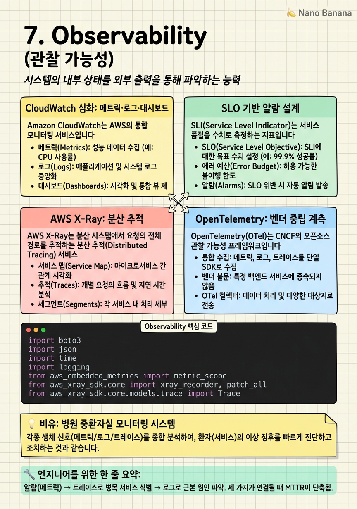

Observability

🎯 학습 목표
- CloudWatch Metric Filter와 Insights로 로그 기반 메트릭을 생성할 수 있다
- X-Ray 트레이스로 마이크로서비스 간 레이턴시 병목을 찾을 수 있다
- OpenTelemetry SDK로 계측(instrumentation)을 구현할 수 있다
- SLO 기반 복합 알람(Composite Alarm)을 설계할 수 있다
- Embedded Metrics Format으로 고해상도 커스텀 메트릭을 비용 효율적으로 발행할 수 있다
현대 분산 시스템에서 장애는 예상치 못한 방식으로 발생합니다. 개별 서비스는 정상이지만 조합했을 때 사용자 경험이 나빠지거나, 특정 사용자 세그먼트에서만 오류가 발생하거나, 레이턴시가 서서히 증가하는 패턴이 대표적입니다. 이런 문제를 빠르게 탐지하고 진단하려면 관찰 가능성(Observability)이 필요합니다.
관찰 가능성의 세 기둥은 메트릭(Metrics), 로그(Logs), 트레이스(Traces)입니다. 메트릭은 시스템 상태를 수치로 요약합니다. 로그는 이벤트의 상세 기록입니다. 트레이스는 요청이 여러 서비스를 통과하는 전체 경로를 추적합니다. 이 세 가지를 연결할 때 비로소 "무슨 일이 일어나고 있는가(메트릭) → 어디서 일어나고 있는가(트레이스) → 왜 일어나고 있는가(로그)"에 답할 수 있습니다.
이 챕터에서는 AWS CloudWatch의 심층 기능, X-Ray의 분산 추적, OpenTelemetry(OTel)를 통한 벤더 중립적 계측, 그리고 프로덕션 운영에 필요한 알람과 대시보드 설계를 다룹니다.
핵심 내용
CloudWatch 심화: 메트릭·로그·대시보드
Amazon CloudWatch는 AWS의 통합 모니터링 서비스입니다. 기본 메트릭(CPU, 메모리 등)은 자동 수집되지만, 프로덕션 운영을 위해서는 훨씬 더 세밀한 설정이 필요합니다.
고해상도 메트릭: 기본 CloudWatch 메트릭 해상도는 1분입니다. StorageResolution: 1로 설정하면 초 단위 메트릭을 발행할 수 있습니다. API 레이턴시 이상을 초 단위로 탐지해야 하는 경우에 필수입니다.
Metric Math: 여러 메트릭을 수학적으로 조합하여 새로운 메트릭을 계산합니다. 예: 5XXErrors / Requests * 100으로 에러율을 계산하거나, ANOMALY_DETECTION_BAND로 이상 탐지 밴드를 그립니다.
CloudWatch Logs Insights는 로그를 SQL과 유사한 쿼리 언어로 분석합니다. stats avg(latency) by service처럼 집계 쿼리를 실행하고 결과를 대시보드에 위젯으로 추가합니다.
Embedded Metrics Format(EMF)은 로그 메시지에 메트릭을 포함하는 JSON 형식입니다. CloudWatch가 로그에서 메트릭을 자동 추출합니다. 별도 API 호출 없이 비용 효율적으로 커스텀 메트릭을 발행하는 최신 모범 사례입니다.
SLO 기반 알람 설계
SLI(Service Level Indicator)는 서비스 품질을 수치로 측정하는 지표입니다. 가용성, p99 레이턴시, 에러율이 대표적 SLI입니다.
SLO(Service Level Objective)는 SLI의 목표값입니다. "99.9% 가용성", "p99 레이턴시 < 500ms", "에러율 < 0.1%" 같은 형태입니다.
Error Budget은 1 - SLO입니다. 99.9% SLO라면 월간 43.8분의 장애가 허용됩니다. Error Budget이 소진되면 새 기능 배포를 중단하고 안정성에 집중해야 합니다.
Composite Alarm은 여러 알람을 AND/OR로 조합합니다. 예: (에러율 > 1% AND 요청 수 > 1000/min)처럼 트래픽이 적을 때의 오탐(false alarm)을 방지합니다.
알람 액션 계층화:
- P1 (즉시 대응): SNS → PagerDuty/Opsgenie → 온콜 엔지니어 전화
- P2 (1시간 내): SNS → Slack 채널
- P3 (다음 근무일): SNS → Jira 티켓 자동 생성
AWS X-Ray: 분산 추적
AWS X-Ray는 분산 시스템에서 요청의 전체 경로를 추적하는 분산 추적(Distributed Tracing) 서비스입니다.
핵심 개념: Trace는 하나의 요청이 시스템을 통과하는 전체 여정입니다. Segment는 단일 서비스의 처리 시간입니다. Subsegment는 DB 쿼리, 외부 API 호출 등 더 세부적인 작업 단위입니다.
Service Map은 서비스 간 관계와 상태를 시각화합니다. 응답 시간, 오류율, 호출 수를 각 서비스 노드에 표시합니다. 어떤 서비스가 병목(bottleneck)인지 한눈에 파악합니다.
X-Ray와 Lambda: Lambda 함수는 X-Ray 추적을 콘솔에서 클릭 한 번으로 활성화할 수 있습니다. 콜드 스타트 초기화 시간이 Segment로 표시되어 성능 분석에 유용합니다.
샘플링(Sampling): 모든 요청을 추적하면 비용이 폭발합니다. 기본 샘플링 규칙은 초당 1개 + 5%입니다. X-Ray Sampling Rules로 특정 경로나 사용자 기반의 동적 샘플링을 설정합니다.
OpenTelemetry: 벤더 중립 계측
OpenTelemetry(OTel)는 CNCF의 오픈소스 관찰 가능성 프레임워크입니다. 코드 계측(instrumentation)을 표준화하여 어떤 백엔드(Datadog, Grafana, CloudWatch, Jaeger)로도 데이터를 전송할 수 있습니다.
OTel의 구성 요소는 세 가지입니다.
- SDK: 애플리케이션 코드에 포함. 메트릭·로그·트레이스 생성
- Collector: 에이전트로 동작. 데이터 수집·변환·전송
- Protocol (OTLP): OTel 데이터 전송 표준 프로토콜
AWS Distro for OpenTelemetry(ADOT)는 AWS가 배포하는 OTel 공식 배포판입니다. Lambda Layer로 제공되어 코드 변경 없이 Lambda 함수에 적용됩니다. X-Ray, CloudWatch, Amazon Managed Grafana로 데이터를 동시에 전송합니다.
OTel은 락인(lock-in) 방지가 핵심 가치입니다. 오늘 X-Ray를 쓰다가 내일 Datadog으로 바꿔도 애플리케이션 코드는 변경하지 않아도 됩니다.
Container Insights와 Application Signals
CloudWatch Container Insights는 ECS와 EKS의 컨테이너 메트릭을 자동으로 수집합니다. CPU, 메모리, 네트워크, 디스크 I/O를 컨테이너·Task·서비스·클러스터 수준에서 집계합니다.
EKS Container Insights는 DaemonSet으로 배포된 CloudWatch Agent가 노드와 Pod 메트릭을 수집합니다. Kubernetes 이벤트도 CloudWatch Logs로 전송하여 kubectl events 없이 콘솔에서 조회합니다.
CloudWatch Application Signals는 SLO 기반 애플리케이션 성능 모니터링 서비스입니다. OTel 자동 계측으로 수집된 메트릭에서 서비스별 p99 레이턴시, 오류율 SLO를 자동 생성하고 Error Budget을 추적합니다.
Synthetics Canary는 CloudWatch가 관리하는 합성 모니터링(Synthetic Monitoring)입니다. Headless 브라우저 스크립트로 실제 사용자 행동을 시뮬레이션하고, 트랜잭션 레벨의 가용성을 모니터링합니다. API 엔드포인트 헬스체크는 물론 로그인 플로우 전체를 모니터링할 수 있습니다.
💡 비유로 이해하기
관찰 가능성을 병원 중환자실(ICU)에 비유해봅시다. 메트릭은 침대 옆 모니터의 심박수·혈압·산소포화도 숫자입니다. 이상 수치가 감지되면 알람이 울립니다. 로그는 의사 진료 기록입니다. "오전 10시: 환자가 흉통을 호소함"처럼 구체적인 사건을 기록합니다. 트레이스는 환자가 응급실 → 검사실 → 수술실 → ICU를 거치는 전체 여정 기록입니다. 어느 단계에서 얼마나 걸렸는지 추적합니다.
X-Ray Service Map은 병원 플로우차트입니다. 응급실에서 수술실로 가는 경로를 시각화하고, 어느 단계에서 지연이 발생하는지(병목)를 한눈에 봅니다.
SLO는 "응급 수술 환자는 도착 후 30분 내 수술실 이송" 같은 목표값입니다. Error Budget은 한 달에 몇 건의 지연이 허용되는지입니다. Error Budget이 소진되면 시스템 개선에 집중해야 합니다.
💻 코드 예시
Embedded Metrics Format으로 커스텀 메트릭을 발행하고, X-Ray로 Lambda 함수의 외부 API 호출을 추적하는 예제입니다.
import boto3
import json
import time
import logging
from aws_embedded_metrics import metric_scope
from aws_xray_sdk.core import xray_recorder, patch_all
from aws_xray_sdk.core.models.trace import Trace
# X-Ray: boto3와 HTTP 라이브러리를 자동 패치 (모든 호출이 Subsegment로 기록)
patch_all()
logger = logging.getLogger()
# 1. Embedded Metrics Format으로 커스텀 메트릭 발행
@metric_scope
def process_payment(payment: dict, metrics) -> dict:
"""EMF를 사용하면 추가 API 호출 없이 CloudWatch 메트릭이 자동 생성됩니다."""
start = time.time()
metrics.set_namespace('MyApp/Payments')
metrics.set_dimensions({'Environment': 'production', 'Region': 'ap-northeast-2'})
try:
# 결제 처리 로직 (생략)
result = {'status': 'success', 'transactionId': 'TXN-001'}
# 메트릭 발행 — CloudWatch에 자동 전송
metrics.put_metric('PaymentSuccess', 1, 'Count')
metrics.put_metric('PaymentAmount', payment['amount'], 'None')
metrics.put_metric('PaymentLatency', (time.time() - start) * 1000, 'Milliseconds')
return result
except Exception as e:
metrics.put_metric('PaymentFailure', 1, 'Count')
raise
# 2. X-Ray Subsegment로 외부 API 호출 추적
@xray_recorder.capture('process-order') # 자동으로 Segment 생성
def process_order(order_id: str) -> dict:
# 결제 서비스 호출 — X-Ray Subsegment 자동 생성
with xray_recorder.in_subsegment('payment-service') as subsegment:
subsegment.put_annotation('orderId', order_id) # 검색 가능한 인덱스
subsegment.put_metadata('orderDetails', {'id': order_id}) # 비검색 데이터
payment_result = process_payment({'amount': 59000})
# DynamoDB 호출 — boto3 patch_all()로 자동 추적
dynamodb = boto3.resource('dynamodb')
table = dynamodb.Table('orders')
table.put_item(Item={'orderId': order_id, 'status': 'completed'})
return payment_result
# 3. CloudWatch Alarm 생성 (에러율 기반)
def create_error_rate_alarm(function_name: str) -> None:
cw = boto3.client('cloudwatch', region_name='ap-northeast-2')
cw.put_metric_alarm(
AlarmName=f'{function_name}-error-rate-high',
AlarmDescription='Lambda error rate > 1% for 5 minutes',
Metrics=[
{'Id': 'errors', 'MetricStat': {'Metric': {'Namespace': 'AWS/Lambda',
'MetricName': 'Errors', 'Dimensions': [{'Name': 'FunctionName', 'Value': function_name}]},
'Period': 60, 'Stat': 'Sum'}},
{'Id': 'invocations', 'MetricStat': {'Metric': {'Namespace': 'AWS/Lambda',
'MetricName': 'Invocations', 'Dimensions': [{'Name': 'FunctionName', 'Value': function_name}]},
'Period': 60, 'Stat': 'Sum'}},
{'Id': 'error_rate', 'Expression': 'errors / invocations * 100', 'Label': 'Error Rate (%)'}
],
ComparisonOperator': 'GreaterThanThreshold',
Threshold': 1.0,
EvaluationPeriods': 5,
TreatMissingData': 'notBreaching',
AlarmActions': ['arn:aws:sns:ap-northeast-2:123456789:pagerduty-p1']
)@metric_scope 데코레이터가 EMF JSON을 CloudWatch Logs에 발행하면, CloudWatch가 자동으로 메트릭을 추출합니다. 별도 put_metric_data API 호출이 없어 비용과 레이턴시가 감소합니다. patch_all()이 boto3를 래핑하여 DynamoDB 호출도 자동으로 X-Ray Subsegment가 됩니다. put_annotation은 트레이스 검색용 인덱스이며, put_metadata는 검색 불가능한 상세 데이터입니다. Metric Math Expression errors / invocations * 100으로 에러율을 계산하는 Alarm은 트래픽이 낮을 때 오탐을 방지합니다.
🏭 현업에서의 평가
✅ 시니어가 보는 것
- SLI/SLO/Error Budget 개념을 비즈니스 맥락에서 설명
- 레이턴시 이상을 트레이스로 병목 서비스까지 추적하는 디버깅 플로우
- 고카디널리티 메트릭의 비용 문제와 해결책
- 온콜 알람 피로도(Alert Fatigue) 감소 전략
- Structured Logging으로 로그 쿼리 최적화
⚠️ 레드 플래그
- 알람 없이 운영 (사용자 불만 접수 후에야 장애 인지)
- 로그를 print()로 출력하고 CloudWatch Logs에 구조화 없이 저장
- X-Ray 샘플링 100%로 설정 — 비용 폭발
- 대시보드 없는 운영 — 시스템 상태를 시각적으로 파악 불가
🎤 예상 인터뷰 질문
- p99 레이턴시가 갑자기 2배가 됐습니다. X-Ray와 CloudWatch Logs로 어떻게 원인을 찾겠습니까?
- CloudWatch 커스텀 메트릭 비용을 최소화하면서 고해상도 메트릭을 수집하는 방법은?
- 마이크로서비스 A가 B를 호출하는 구조에서, B의 p99 레이턴시 저하가 A의 응답 시간에 미치는 영향을 어떻게 추적하겠습니까?
✨ 핵심 요약
메트릭·로그·트레이스 세 기둥을 연결
알람(메트릭) → 트레이스로 병목 서비스 식별 → 로그로 근본 원인 파악. 세 가지가 연결될 때 MTTR이 단축됨.
EMF로 커스텀 메트릭을 비용 효율적으로
put_metric_data API 대신 로그에 EMF JSON을 포함. 추가 API 호출 없이 메트릭 자동 추출.
SLO와 Error Budget이 운영 우선순위를 결정
Error Budget 소진 = 기능 개발 중단, 안정성 투자. SLO 없으면 모든 인시던트가 동등하게 취급됨.
X-Ray 샘플링 규칙을 반드시 설정
기본 5% 샘플링이 프로덕션에 적합. 에러 발생 요청은 100% 캡처하도록 규칙 추가.
OTel로 벤더 락인 방지
AWS X-Ray SDK 대신 OTel을 사용하면 백엔드를 바꿔도 코드 수정 불필요. ADOT Layer로 Lambda에 쉽게 적용.
Container Insights는 ECS/EKS 운영 필수
컨테이너별 CPU/메모리/네트워크 메트릭 자동 수집. 커스텀 대시보드 없이도 기본 운영 가시성 확보.
Composite Alarm으로 알람 피로도 감소
단일 메트릭 알람은 오탐이 많다. 에러율 AND 트래픽 볼륨 조합으로 의미있는 알람만 발생시킴.
Structured Logging이 쿼리 비용을 낮춘다
JSON 형식 로그는 CloudWatch Logs Insights로 필드 기반 쿼리 가능. 텍스트 파싱 없이 빠른 분석.